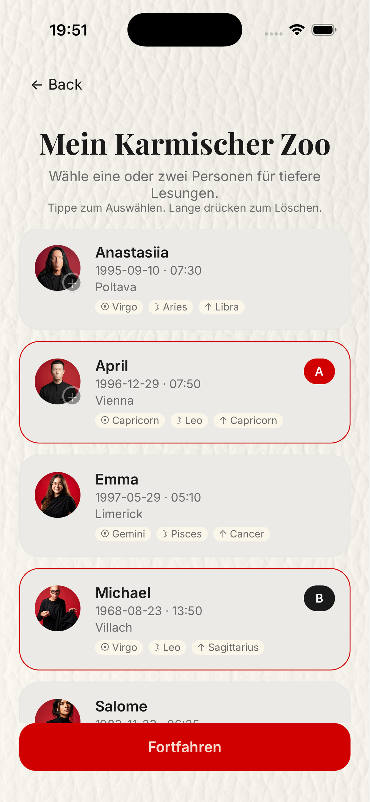
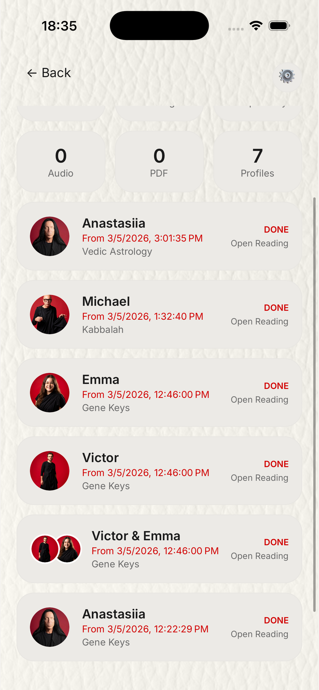
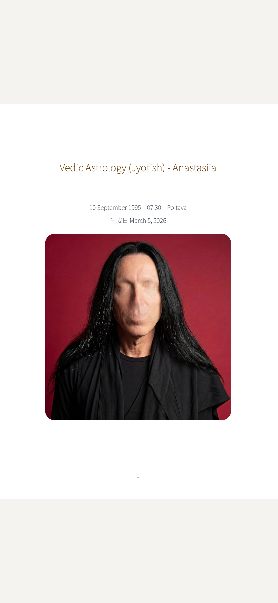

Deep Readings
Generate exhaustive 40-minute audio readings exploring the exact mathematical friction between any two souls.
The Karmic Zoo
The 1 in a Billion app allows you to populate your personal 'Karmic Zoo'—a soul library where you can add absolutely anyone. Once added, you gain the power to combine everyone with everyone.
There are no limits to how you explore destiny. You can run deep psychological cross-referencing on your partner, your colleagues, your friends, or even absolute strangers, revealing the unseen mathematical threads connecting you.

The 'Nuclear' Option
When you select two souls, you unlock their Synastry Profile. Standard combinations yield three core diagnostic readings, each synthesizing into a profound 40-minute generated audio exploration.
But for those who demand absolute truth, there is the Nuclear Option: unlocking 16 simultaneous readings, for each 40 minutes. This exhaustive psychological extraction leaves no stone unturned in the realm of Western Astrology, Vedic D9 Charts, Human Design Circuitry, Kabbalah, and Gene Keys Shadows.

Consume The Truth
Results are delivered through a beautifully immersive audio player, allowing you to listen to your custom 40-minute karmic analysis exactly like a premium podcast.
Simultaneously, the engine generates a massive, comprehensive PDF book encompassing the entirety of the psychological data. Whether you prefer to read the sacred geometry or hear it articulated via the stunning AI voice synthesizer, the truth of your connection is preserved forever.

